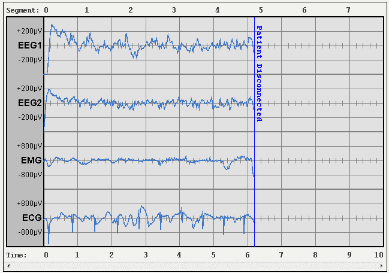
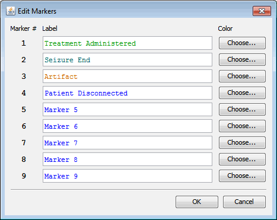

Markers
GPD supports inserting markers in treatment graphs, both during collection and when reviewing a graph. A marker is a user-defined indicator that something has occurred at a certain point during data collection, for instance that treatment was administered, the seizure ended, or an artifact was present.
Note: To use markers, you'll need to set both Treatment Collection and Treatment Viewer to
GPDin Preferences, and ensure that in the Monitoring Screen, the menu optionCollection→Monitoring Data Format→GPDTis selected.

In the above screenshot, you see a "Patient Disconnected" marker just after the 6s line.
Markers During Collection
From the Markers menu of the Monitoring / Collection window, you can define up to nine markers that can be inserted at any time during collection.

To insert a given marker, simply press the appropriate number key on the keyboard (for instance, pressing 7 will insert the 7th marker).
Markers in the Review Screen
On the GPD Review Treatment screen, you can right click any point in the graph to insert or delete a marker. The text for these markers do not have to be one of the nine pre-defined types, but can be anything you type. Clicking one of the preset buttons will load the text and color for that preset.
Note that you can only use markers when viewing a GPDT file – the DAT format does not support markers.